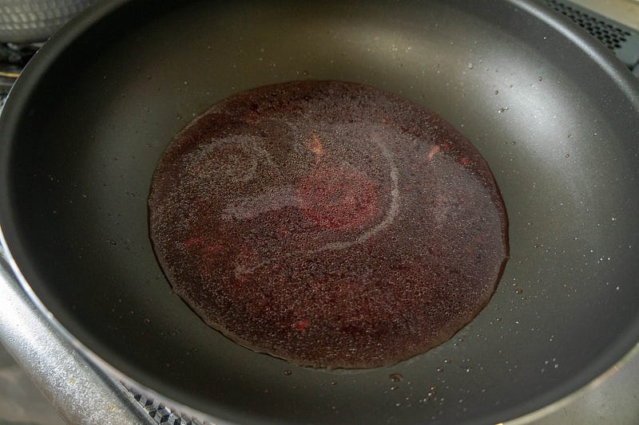
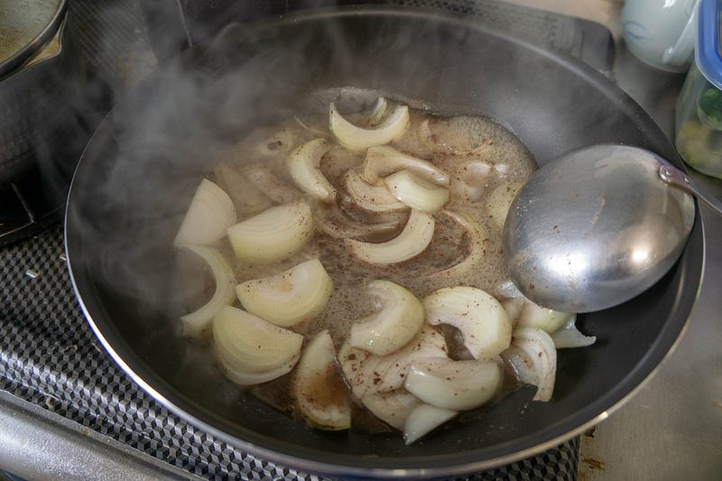
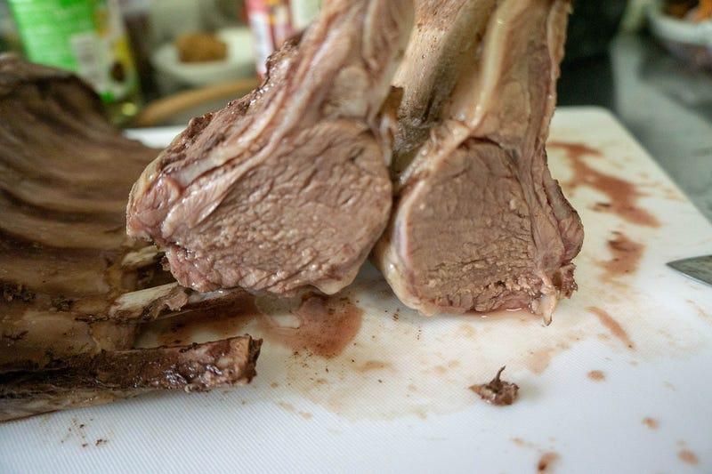
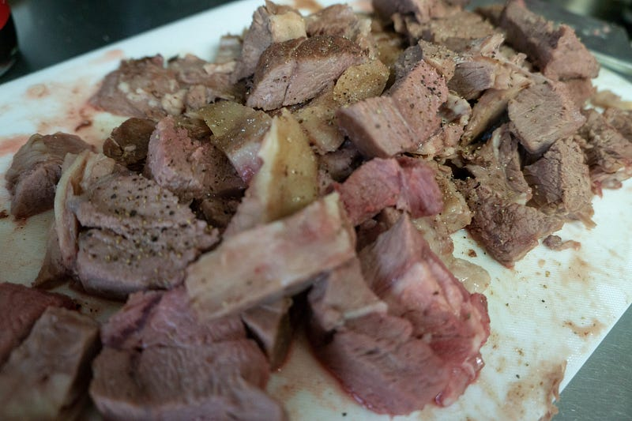
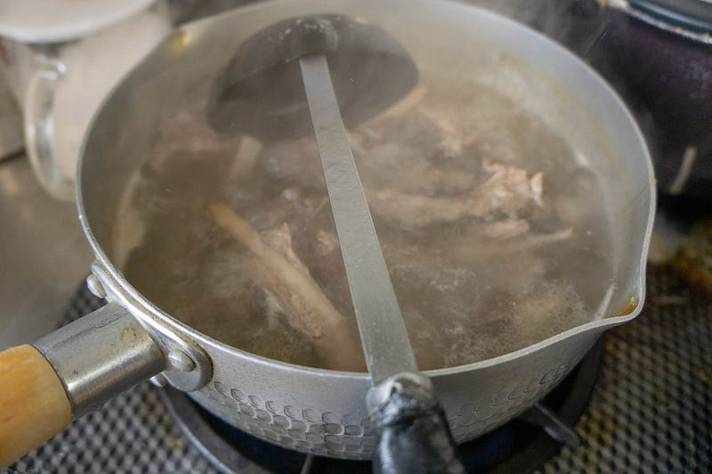
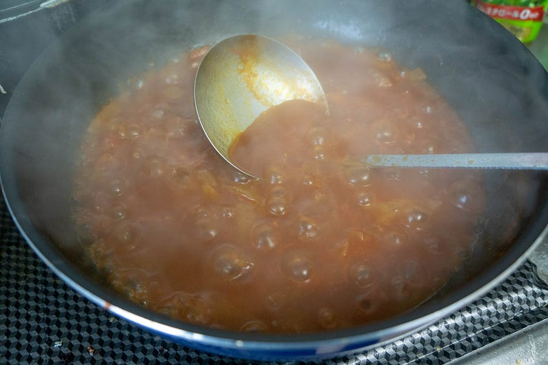
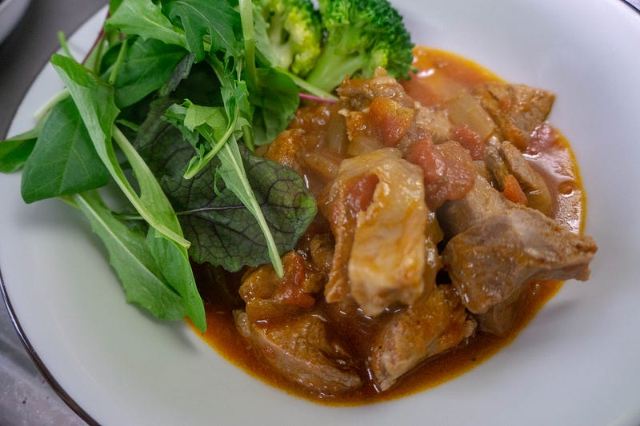

低温調理の設定ミスのラムラックからサリードもどき
低温調理の設定ミスのラムラックからサリードもどき
いつもミートガイからラムラックを買っているのだが、たまにはハナマサのヤツを試してみようと、買ってきたところ、低温調理の温度を盛大に間違えてしまった。これはそこからのリカバリーの物語である。
本来なら、ラムチョップはレアに仕上げるために55、56℃で数時間低温調理する。
妻は欧米料理にあまり縁が無く育ったのだけれども、よりによって筆者と出会ってしまったが故に、ラムだ鴨だ鹿だ猪だなどを様々な洋風な手法で食べさせられたりと教育を施されてしまった。そんな妻が「…ラム肉が食べたい」と伝えてきたのである。作りましょう…medium.com
だが、今日は子供の世話などもあって、つい前回イワシのコンフイを作ったときの設定のまま76℃で放置してしまった。
気づいたのは食べる40分くらい前。やばい！となってそこからリカバリーを始めた。
低温調理しているから肉は柔らかいだろうが、完全に火が通ってしまっている温度だ。いつものように焼いて食べれないことはないが、確実においしさ半減である。
そこで家にある食材を、一通り確認して、サリード(Tharid)もどきを作ることに決めた。
伝統的な 喫茶店は様々な機会に使用されてきたが、現代では フードコートスタイルの カフェに取って代わられている。サウジアラビア高等教育省によれば、サウジアラビアにおいて コーヒー（…ja.wikipedia.org
通常サリードは肉のうまみを野菜に移す煮込み料理なので肉も野菜も全部一緒に煮るのが筋だが、今回はすでに低温調理されている肉の柔らかさを最大限に使いたいので、ソースを絡める感じのもどき料理にする。
まずダボダボでている肉汁をサルベージし、それでタマネギを煮る。


その間に骨と肉を大雑把に切り離す。またすこしミディアムレアな部位もあったが、やはり焼き物としては人に出せない具合。肉は一口大に切って置いておく。


骨部分はもうちょい使えそうなので、別の鍋にお湯を沸かしてすこし塩を加え、そこに骨部分を全部いれて出汁をとる。時間があれば全部同じ鍋で行きたいが、なにせ急いでいる。

その間に煮詰まってきた肉汁にトマト缶を追加。

出汁が出始めたところで、その汁でトマトソースの方をのばす。伸ばして、煮詰める。
それをしながら、オリーブオイル、ホールクミン、パプリカパウダーなどを入れていく。塩を気持ち薄めに入れ、野菜のコンソメも入れておく。砂糖を隠し味程度に。
急がないと子供たちが腹減ったとうるさいので、とにかく慌てながらソースを煮詰める。
骨付き肉は適当なところであげておく。見栄えが悪いので写真には撮ってないが、骨のまわりの肉も後述のように味付けして、しゃぶって大人が全部食べました。
少しとろみのついたちょうどいい感じになったら、火を止める。肉に軽く塩、たっぷり目の胡椒をさて、別の鍋でさっと炒める。
そしてそれをあつあつのトマトソースと合体。サリードもどきのできあがり。正味40分でできた。

本当なら長粒種のお米にかけて食べたい感じだが、今日は食パンの日だったので食パンにソースをつけながらと。
子供も食べるので控えめだが、スパイシーでうまい。とりあえずホールクミンを入れておけばインドからペルシアあたりの料理っぽくのなるってのもポイントである。
子供らはラムチョップの焼いたのを食べたかったらしく、若干テンションは低くなってしまったが、ぱくぱく食べてくれた。大人にとってはおいしい料理だった。
というわけでリカバリー成功の話でした。